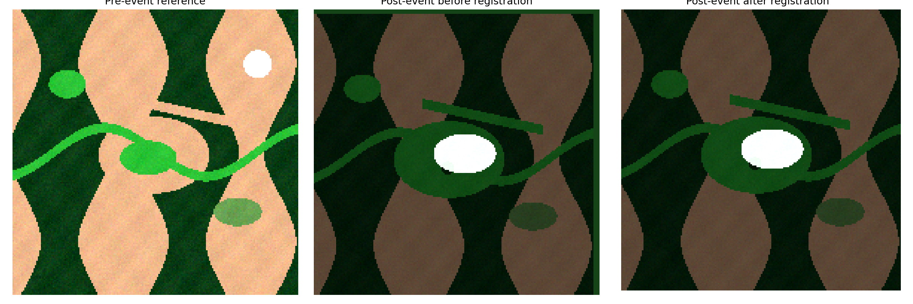
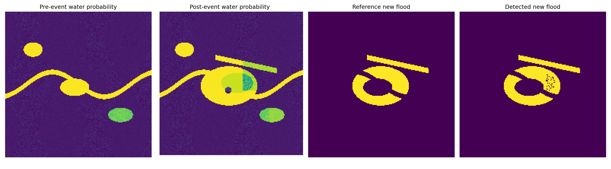
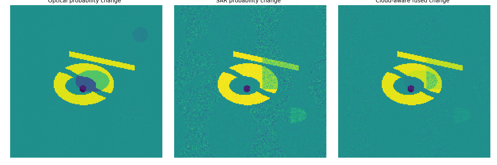
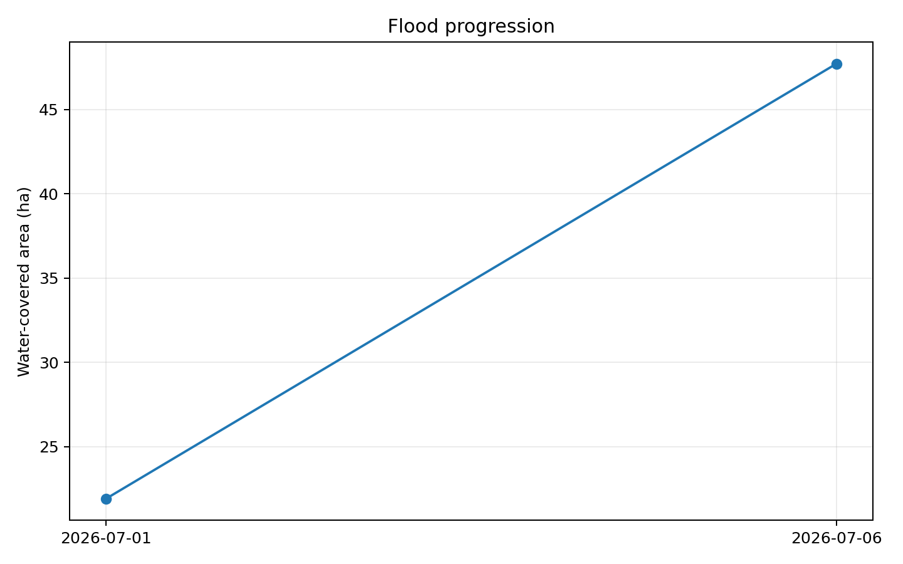

OpenSat Mission Lab v1.7
Temporal Flood Progression and Optical/SAR Fusion
Integer co-registration, temporal change detection, and cloud-aware sensor fusion.
Registration
-3, +4 px
Fusion F1
0.992
Fusion IoU
0.984
New flood
26.35 ha
Status
PASS
Co-registration

Temporal change

Optical/SAR fusion

Flood progression

| Date | Water area (ha) | New flood (ha) | Receded (ha) |
|---|
Scope: the bundled scenes are synthetic, georeferenced verification fixtures. The fusion probabilities and progression estimates are research-grade surrogates, not emergency-response products.